ARCC 2026 Sentry Robot
A competition robot combining a suspension X-drive chassis, spatial-memory module, supercapacitor, fully autonomous navigation, and auto-aim. It helped RoboRambler earn second place in the 1v1 competition and scored multiple fully autonomous kills in 3v3.
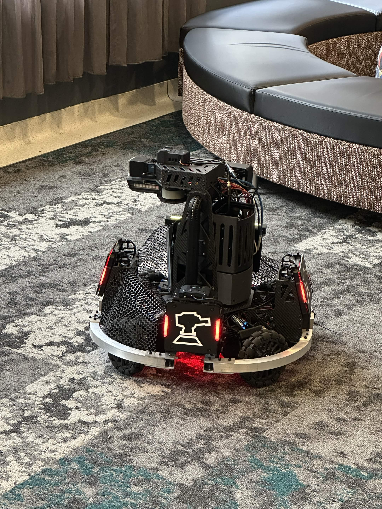
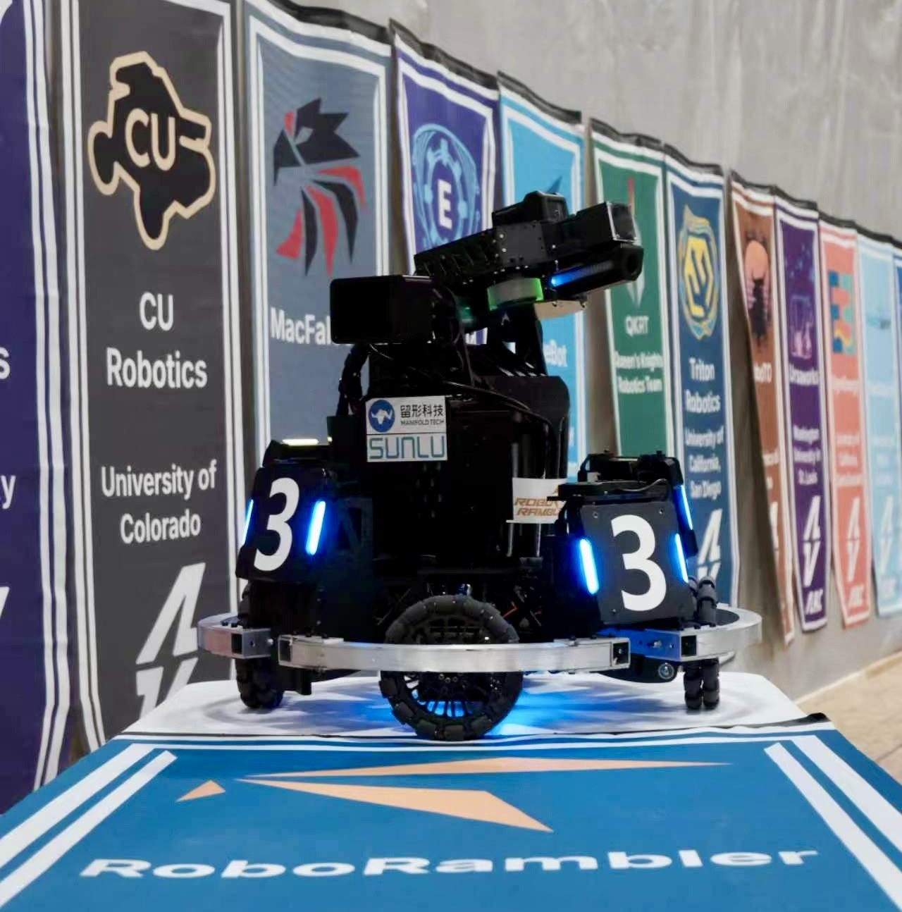
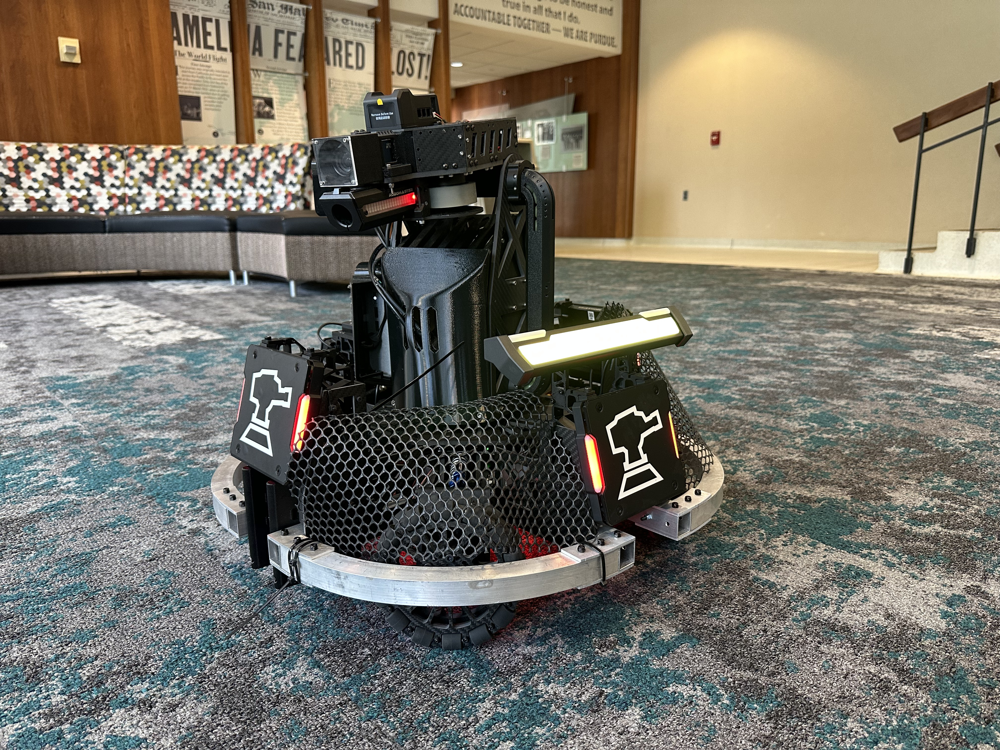
Project Overview
ARCC competition rules limited the robot to a 300 Wh total power capacity, a maximum mass of 25 kg, a 600 × 600 × 600 mm storage envelope, and an 800 × 800 × 800 mm maximum transformation envelope. A supercapacitor system was permitted with up to 2000 J nominal and 2200 J measured energy storage. The sentry also had to carry a single 17 mm launching mechanism and approximately 3.25 kg of referee-system hardware, several components of which imposed defined keep-out zones.
The chassis frame was built from straight and bent 1 × 1 in aluminum extrusions joined through laser-cut aluminum brackets and superstructures. The suspension X-drive modules used 3–5 mm carbon-fiber plates connected by machined aluminum strips with mutually perpendicular M3 and M4 tapped holes. Components with more complex geometry—including X-drive motor mounts, suspension-strut mounts, ammunition channels, the feed tube, and protective shields—were 3D printed in PLA, PA6-CF, or TPU depending on their mechanical requirements.
My Contribution
- Designed the entire turret and reverse-engineered DJI's official CNC-aluminum 17 mm ammunition indexer into a version optimized for 3D printing.
- Laid out suspension X-drive module dynamics and completed design details including mechanical travel stops, wiring fixtures and outlets, interference resolution, and tolerancing after the primary structure was developed by other team members, as well as ordering custom parts from manufacturers.
- Redesigned the upper X-drive module base plates with tenons that locate directly into slots in the gimbal-bearing carrier plate, creating a rigid gimbal base without additional supporting structure.
- Standardized the turret-to-gimbal interface across the team's robots to improve simplicity and interchangeability.
- Planned referee-system component placement and designed mounting and protection hardware for electronics.
- Identified a fatigue risk in the M3 × 95 mm bolt supporting the suspension strut, developed an alternative using a heat-treated PA6-CF mount and much shorter M3 pin, and convinced the team to complete the mechanically intensive replacement two weeks before competition.
Interactive CAD Model
Explore the complete mechanical assembly and its major chassis, suspension, gimbal, and turret subsystems.
View ARCC 2026 Sentry on Onshape →Chassis Development
After RMNA 2025, the team recognized that suspension was important for maintaining traction during aggressive maneuvers and reducing vibration when the robot crossed uneven field surfaces or ammunition scattered on the ground. We therefore prioritized development of a suspension X-drive chassis.
X-drive was also attractive because it allowed efficient continuous chassis rotation while remaining mechanically much simpler than a swerve drive. During competition, robots continuously rotate to reduce the time any individual armor plate remains exposed to incoming fire.
For suspension travel, I selected a four-bar linkage instead of vertical guide rails and carriages because the linkage geometry offered greater adjustability during development and a larger and bettern enclosed room to accomodate the M3508 motor with its original gearbox. The main goal was to keep the wheels as close to the chassis center as possible to achieve faster rotation. We tested multiple linkage configurations and suspension-strut arrangements using 3D-printed prototypes. One prototype equipped with the computing unit and spatial-memory module was then handed to the software team for autonomous-navigation development.
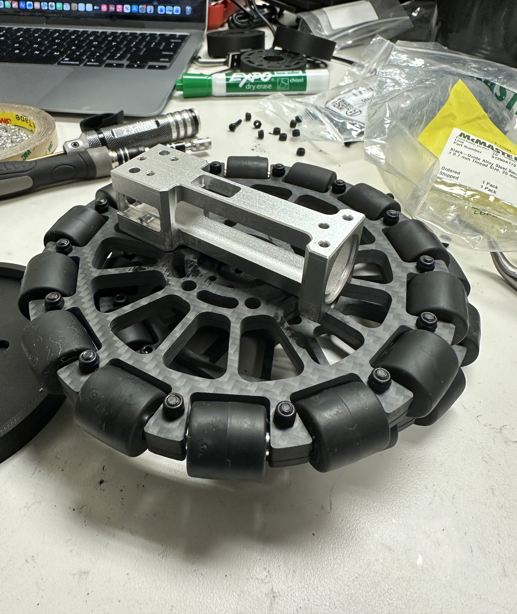
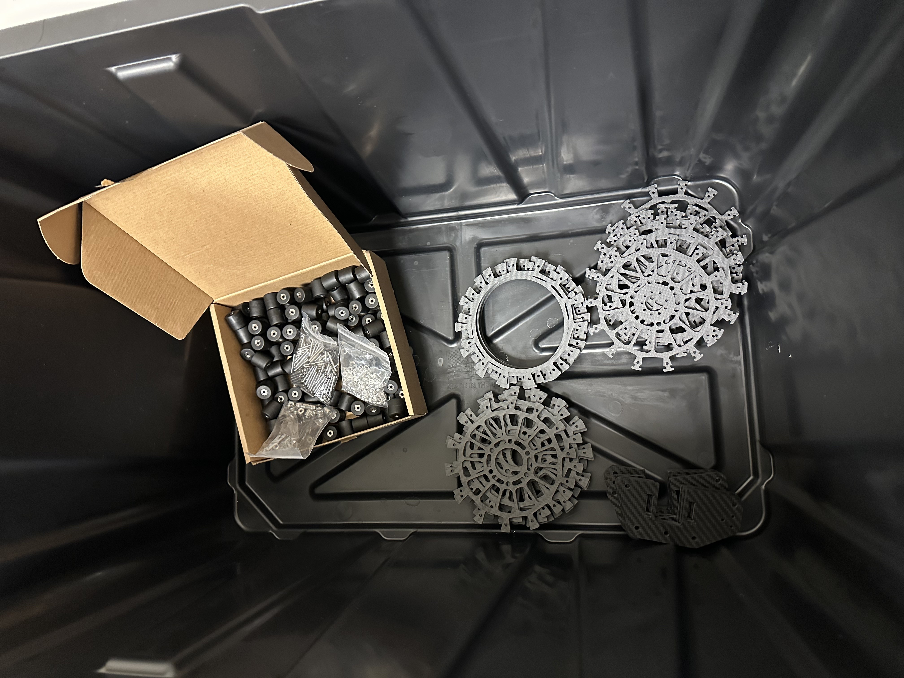
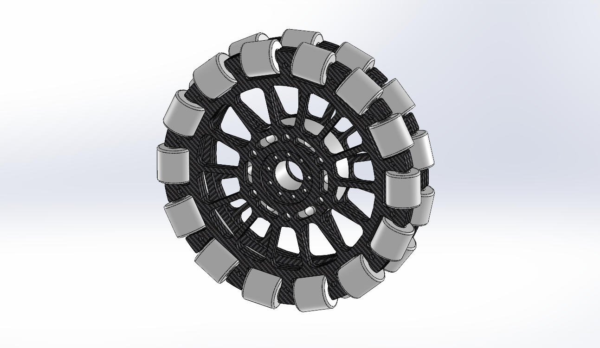
In the first suspension prototype, the M3 × 95 mm bolt supporting the lower end of the suspension strut had no support along much of its unloaded length and bent severely. The initial fix was a 3D-printed collar secured by four additional screws around the strut joint to support the long bolt.
In May 2026, I noticed that the collar edges were no longer parallel with the nearby motor-mount edges, suggesting that the bolts were still bending. I confirmed the deformation by aligning a straightedge against the collars.
Because the new omni-wheel assemblies left us with spare M3 × 25.5 mm pins, I developed a new solution that replaced the collar with a heat-treated PA6-CF mount containing a short locked pin for the suspension-strut connection.
Implementing the redesign was mechanically intensive: the robots' entire superstructures had to be removed, followed by the X-drive modules, before the original 95 mm bolts could be pulled out. With competition only weeks away, the team was understandably reluctant to reopen an otherwise functional chassis.
I analyzed the bolt's bending stress and fatigue behavior using the Modified Goodman relation and calculated a fatigue factor of safety slightly below 1. I presented the analysis to the team and used it to demonstrate why leaving the existing hardware in place posed an unacceptable fatigue risk. I ultimately convinced the team to undertake the heavy mechanical work required to implement the redesign in June 2026, only two weeks before competition.
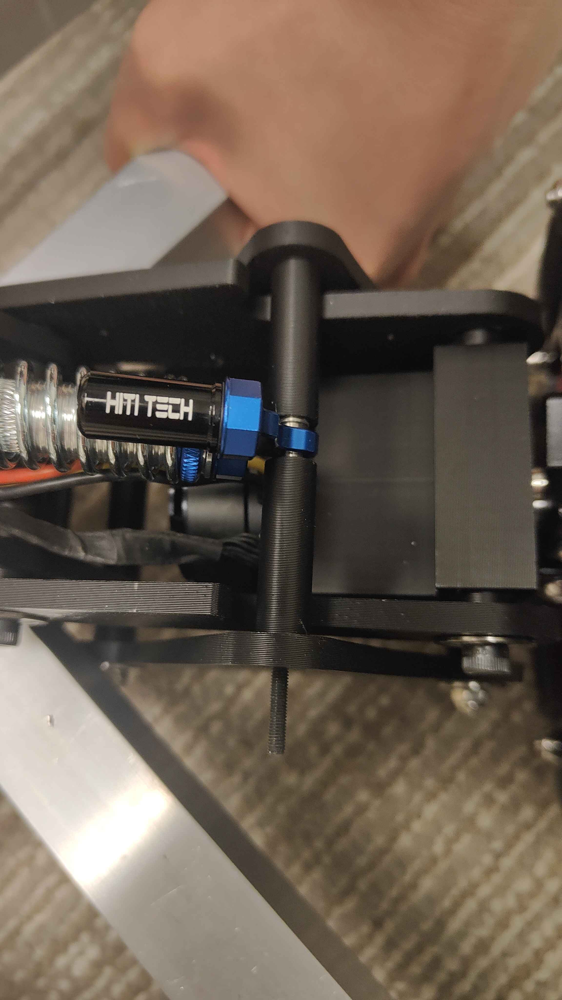
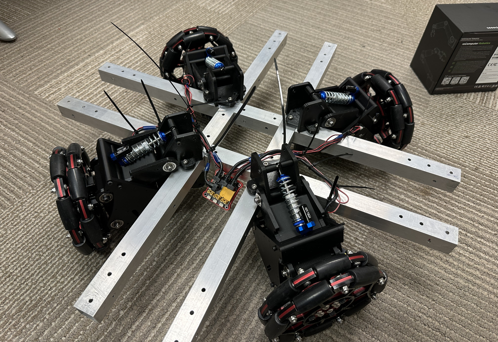
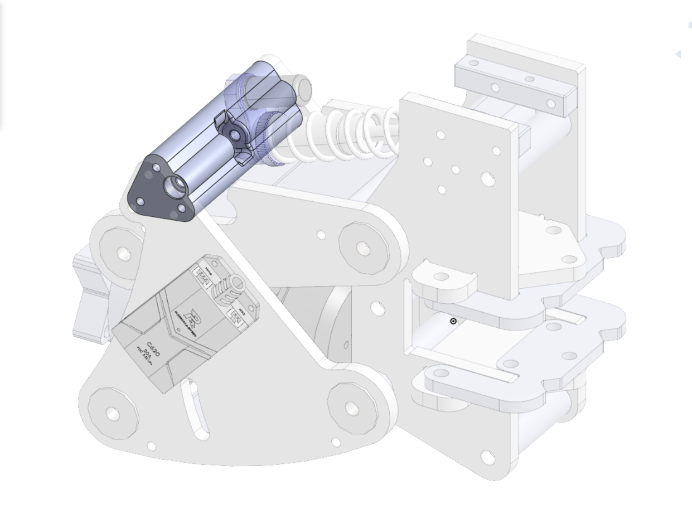
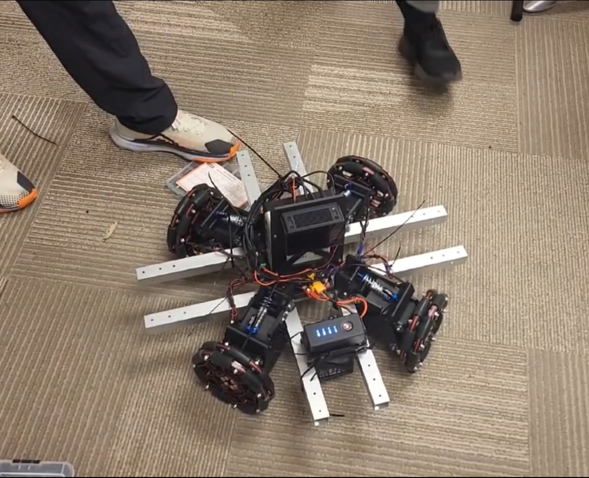
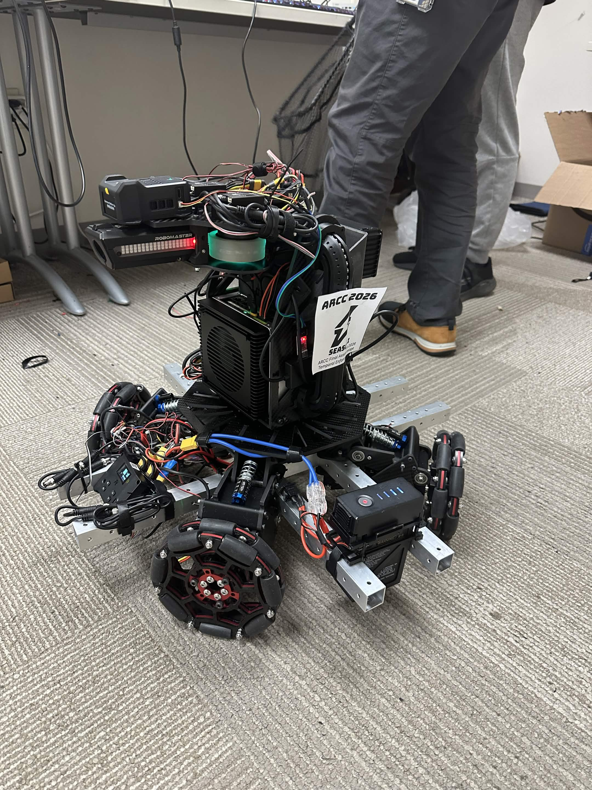
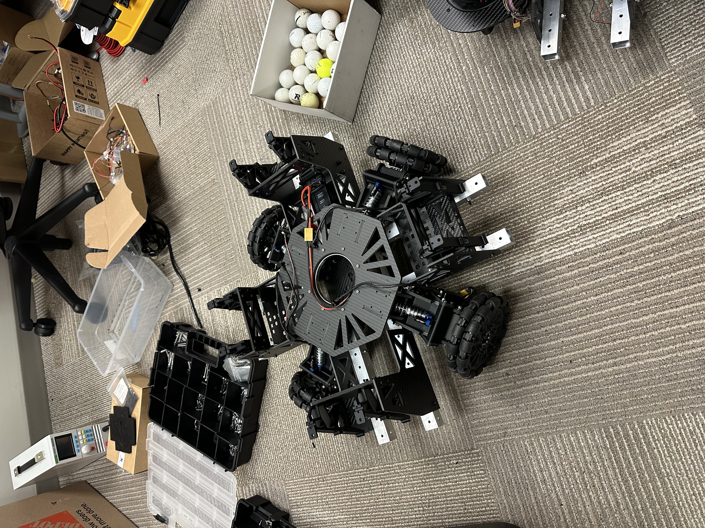
Turret Development
The top-feed ammunition system used on the 2025 Infantry robot placed the ammunition indexer and storage on the pitching gun assembly. This created a control problem because the pitch motor had to accelerate a relatively large mass whose magnitude also changed as ammunition was fired.
For 2026, the team therefore returned to a mid-feed architecture similar to the 2024 Infantry robot. In this configuration, the ammunition indexer and storage remain near the bottom of the turret and rotate in yaw with the turret but do not pitch with the gun. We also considered a bottom-feed design similar to the 2025 Hero, with the ammunition system fixed to the chassis, but selected mid-feed for its mechanical simplicity.
A 3D-printed turret prototype was delivered to the software team in September 2025 for computer-vision auto-aim development. It retained the DJI GM6020 motor for pitch control, but I moved the motor to the bottom of the turret to lower the center of mass. A parallelogram linkage connected the motor to the feed tube, which guides ammunition from the vertical storage channel into the launching chamber. The prototype still used the team's original DJI aluminum indexer.
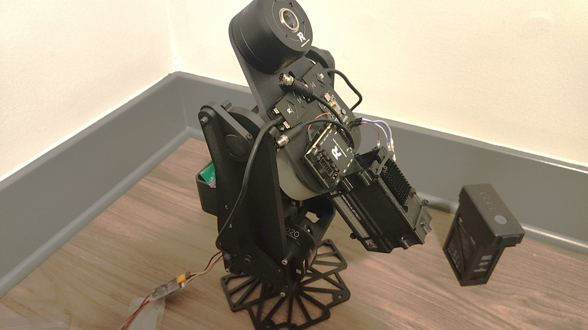
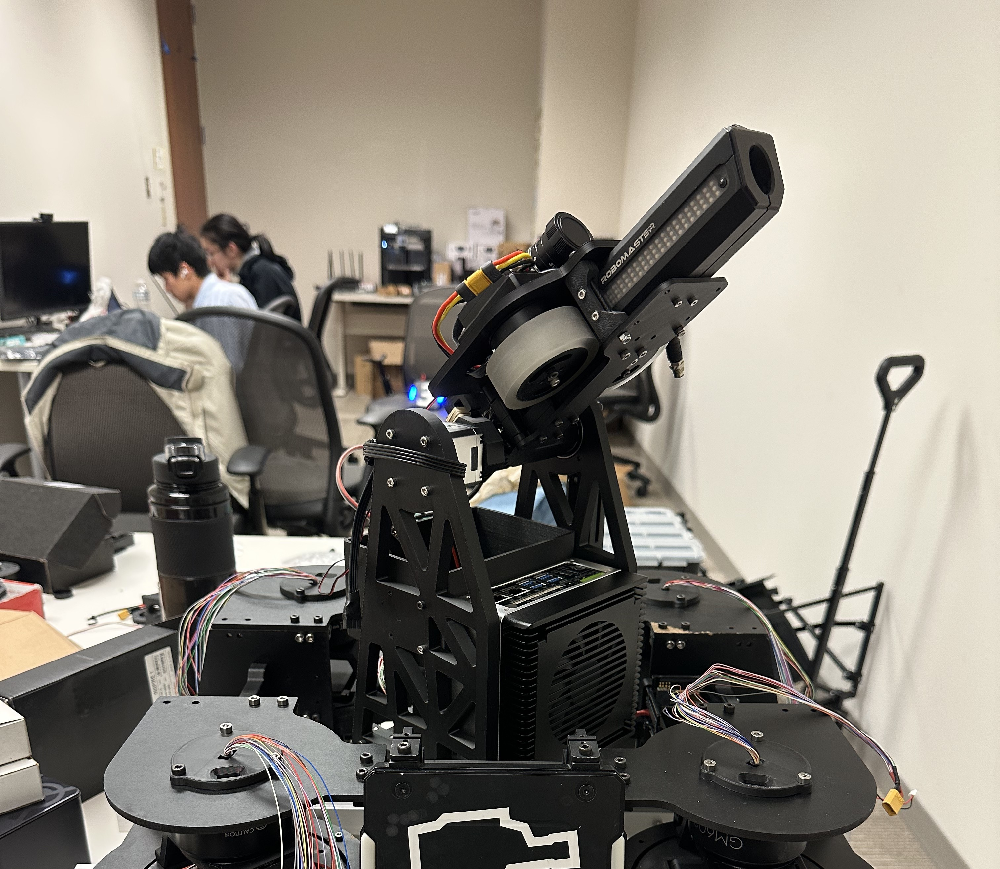
During the founding of Humanoids @ GT in October 2025, I connected with their sponsor, High Torque Robotics, and arranged a sponsorship discussion. The company's VP of Sales, a RoboMaster alumna, showed strong interest in RoboRambler after reviewing our previous work.
After evaluating the company's motor lineup, we requested four HT3532 and two HT4438 humanoid-joint motors for turret development. The HT3532 weighs only about 150 g, provides 0.6 N·m rated torque, and has a diameter close to that of the turret feed tube, allowing it to mount coaxially with the tube.
Software testing showed that the HT3532 was not powerful or responsive enough for the required auto-aim performance, so the larger HT4438 ultimately became the pitch motor.
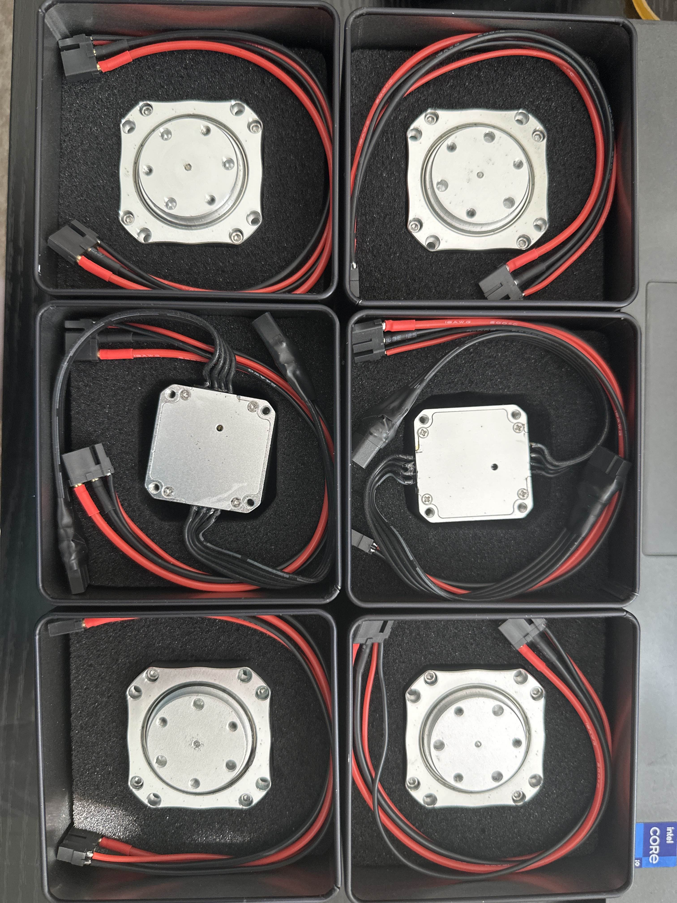
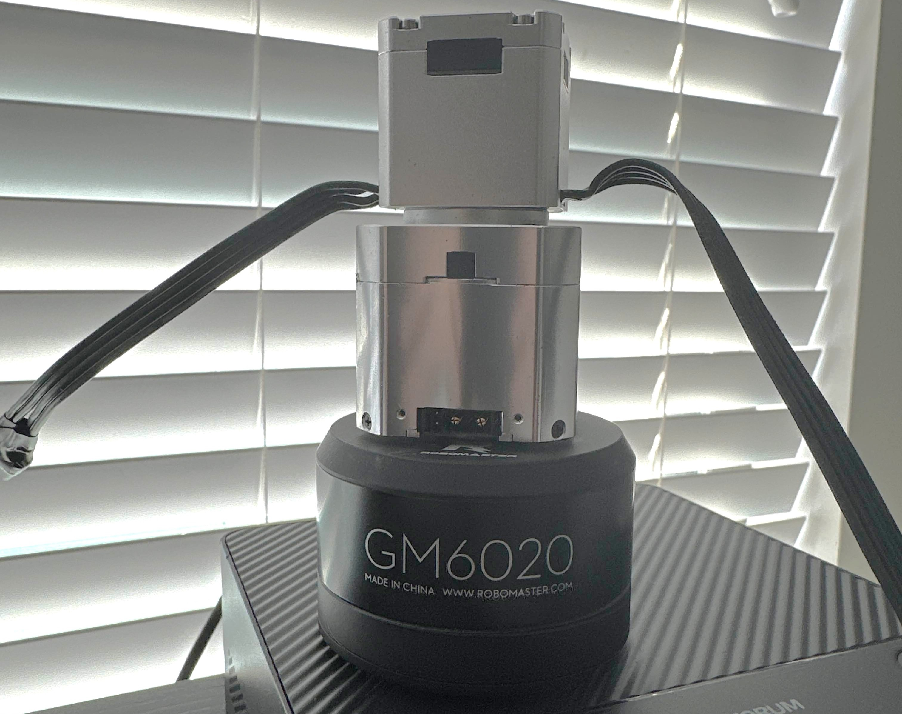
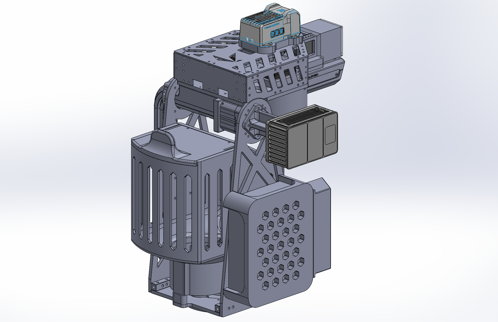
The final turret also made extensive use of small bearings to reduce friction throughout the ammunition path. I placed 2 × 6 × 2.5 mm bearings at turning points in the ammunition channel and feed tube after verifying geometrically that a 17 mm projectile would remain in contact with at least one bearing throughout each transition.
One particularly important feature was a bearing-based projectile stop. If a projectile contacts the launching flywheels before they reach operating speed, the flywheels can be prevented from spinning up properly.
I proposed the concept of a spring-loaded carriage moving in a vertical slot above the launching chamber, with a bearing pressed into the projectile path to prevent ammunition from reaching the flywheels prematurely. One of the team member then developed the concept into the actual mechanism and designed its geometry in detail.
He found a packaging location that stopped the projectile approximately 1 mm before it could touch the flywheels, while still allowing the wheels to grip the projectile before it completely exited the stop. He also determined an effective spring compression so that projectiles could not pass through under their own weight but could still be pushed through without excessive effort from the indexer.
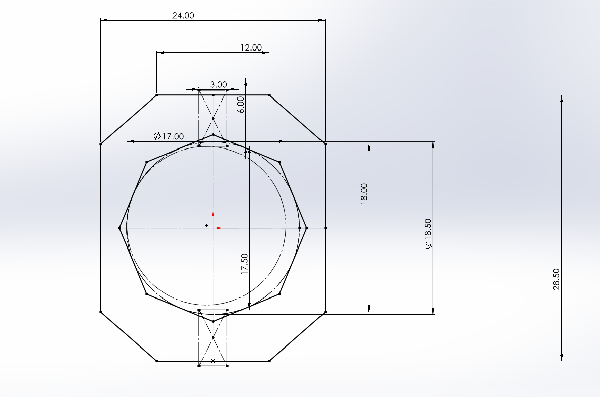
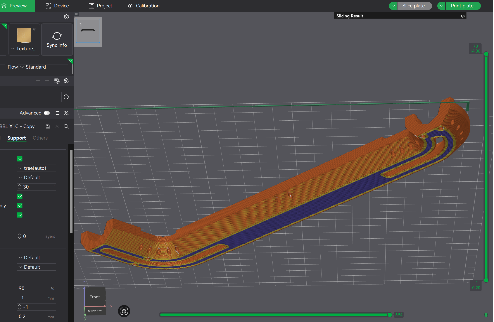
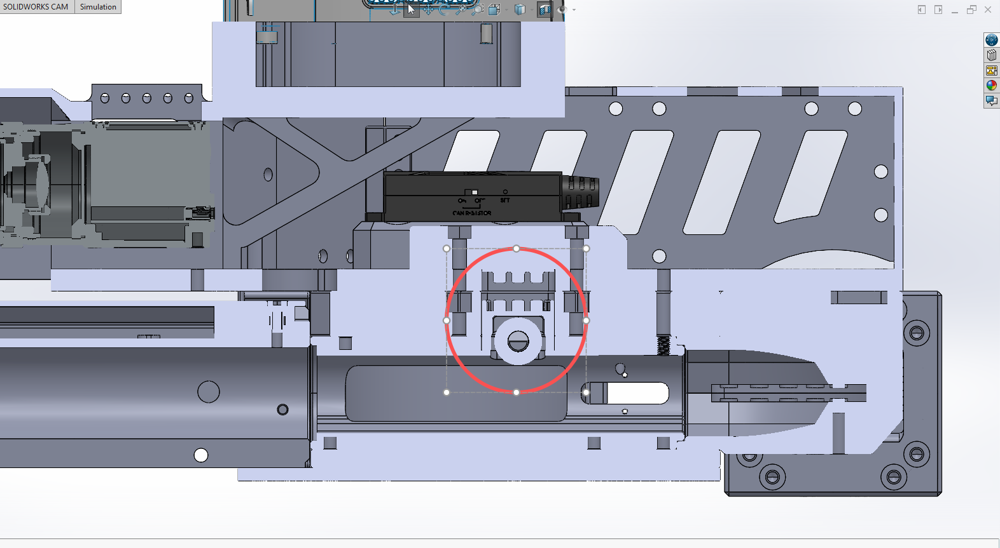
Development Video
Technical Asssesment footage plus other testing clips.
Competition Video
Sentry video clips from competition.
Lessons Learned
Although the competition result and overall robot performance were strong, the turret still had substantial room for improvement. The mid-feed architecture and gun placed significant mass on one side of the pitch axis, making the system less responsive than a bottom-feed turret with a lighter gun and a gooseneck-style ammunition channel.
Our feed channel bent primarily in the same plane as the pitch axis, while a gooseneck channel could bend in the plane orthogonal to that axis and support a leaner pitching assembly. The resulting difference in aiming responsiveness was an important limitation against the eventual champion team.
A bottom-feed architecture would also keep the yaw inertia more consistent because the ammunition indexer and storage would remain fixed to the chassis. In a mid-feed system, turret mass still decreases as ammunition is fired, creating a changing plant for the control system even though the pitch axis is less affected than in a top-feed architecture.
Moving to bottom-feed would likely require replacing the four-bar suspension mechanism with vertical guide rails so that enough chassis space becomes available for the indexer and ammunition storage. Now that the team has substantially more experience designing suspension systems, the adjustability that originally motivated the four-bar layout is less critical.